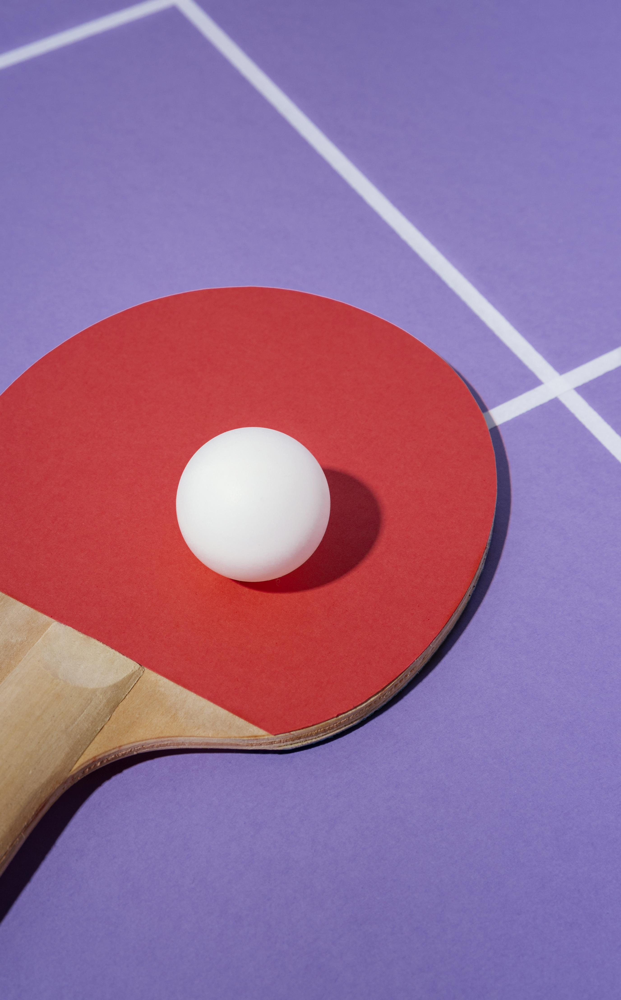

O tênis de mesa, ou pingue-pongue, surgiu na Inglaterra no século XIX como uma adaptação indoor do tênis, usando
materiais improvisados (livros como rede, rolhas de garrafa como bolas).

Mais de um Século de Emoção e Técnica na Mesa!
A popularidade do esporte cresceu rapidamente, levando à necessidade de padronização dos equipamentos e das regras.
Em 1926 foi fundada a International Table Tennis Federation (ITTF), principal entidade reguladora do esporte.
No mesmo ano, ocorreu o primeiro Campeonato Mundial de Tênis de Mesa, em Londres.
A partir da década de 1950, o desenvolvimento de novos materiais para raquetes, como a borracha com esponja,
revolucionou o esporte, aumentando a velocidade e os efeitos aplicados à bola.
O tênis de mesa estreou como esporte olímpico nos Jogos Olímpicos de Seul, em 1988, consolidando sua importância global.
Regras do jogo!
Objetivo: Marcar 11 pontos antes do adversário, com ao menos 2 pontos de diferença.
Um sorteio define quem saca primeiro.
O saque deve ser feito com a bola na palma da mão, lançada para cima e batida atrás da linha de base.
A cada 2 pontos, troca-se o sacador.
No empate de 10 a 10 ("deuce"), o saque alterna a cada ponto.
Normalmente, quem vencer 3 ou 4 sets primeiro (dependendo do torneio) vence a partida.